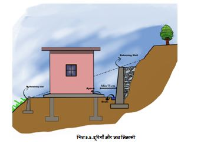

● साइट को काटने और समतल करने के दौरान प्राप्त पत्थरों को संग्रहित किया जाना चाहिए। उनका उपयोग भराई में या निर्माण चरण के दौरान किया जा सकता है। इन्हें बाहर रखा जा सकता है। अन्य निर्माण सामग्री जैसे सीमेंट, लकड़ी आदि को मौसम प्रतिरोधी शेड में रखा जाना चाहिए।
● ढलान को 0.5 से 1 मीटर गहरे चरणों में काटें और काटने के दौरान प्राप्त पत्थरों को संग्रहित करें।
● अपने घर के लिए एक बड़ी समतल भूमि प्राप्त करने के लिए ढलान को 1 मीटर से अधिक गहरे चरणों में काटने से बचें (विशेषज्ञ सहायता को छोड़कर)। ढलान को कई छोटे चरणों में काटना बेहतर है। रेतीली मिट्टी और बजरी का उपयोग करके साइट को समतल करें।

● अपने भवन की रिटेनिंग दीवार और दीवार के बीच कम से कम 750 मिमी या भवन की नींव की गहराई, जो भी अधिक हो, का अंतर छोड़ें।
● पहाड़ी से नीचे की तरफ पानी निकालने के लिए अपनी रिटेनिंग दीवारों के पैरों के पास नालियां बनाएं।
● रिटेनिंग दीवारों की नींव पक्की जमीन पर बनाएं।
● साइट पर सामग्री संग्रहीत करने के लिए स्थान चिह्नित करें। सीमेंट को स्टोर करने के लिए वाटरप्रूफ शेल्टर बनाएं।
● इसके पीछे जमा पानी को बाहर निकालने के लिए रिटेनिंग दीवारों में छेद बनाएं।
● वीप-होल के माध्यम से महीन कणों की धुलाई से बचने के लिए वीप-होल इनलेट पर स्क्रीन या बारीक छेद वाली नायलसॉन की जाली प्रदान करें।
● रिटेनिंग वॉल के ऊपर की तरफ पानी को मुक्त प्रवाह को देने के लिए रिटेनिंग वॉल के बैकफिल गैप को अच्छी तरह से संकुचित बोल्डर से भरें।
● जांचें कि क्या कोई पेड़ आपके घर पर गिर सकता है। उन पेड़ों को छाँटें/हटा दें।
● सुनिश्चित करें कि आपके घर की नींव प्राकृतिक जमीन पर हो और रिटेनिंग दीवारों के पीछे भराव की हुई मिट्टी पर ना बनी हो।